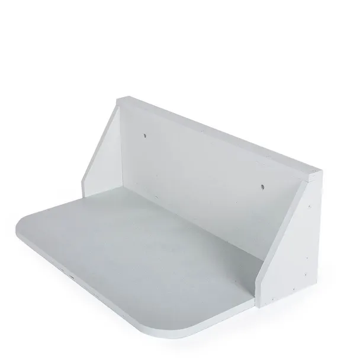
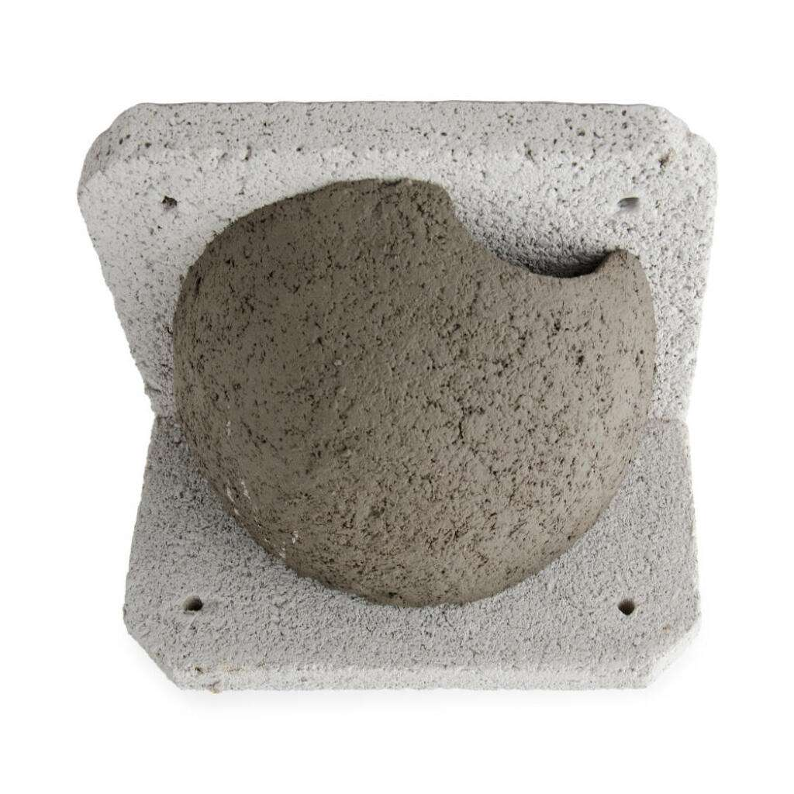

Elles nichent sur nos bâtiments
L'hirondelle de fenêtre niche sous les avant-toits; l'hirondelle rustique utilise granges, étables, hangars et garages.
L'hirondelle de fenêtre et l'hirondelle rustique sont des espèces prioritaires en Suisse et dans le canton de Vaud. Elles ont besoin de bâtiments, de boue, d'insectes volants et de tolérance humaine.
L'hirondelle de fenêtre niche sous les avant-toits; l'hirondelle rustique utilise granges, étables, hangars et garages.
Façades lisses, ouvertures fermées, sols asphaltés, moins d'insectes et rénovations compliquent la nidification.
Protéger les colonies, garder de la boue, soutenir les insectes et gérer les fientes vaut mieux que bloquer les nids.
Le contenu d'apprentissage complet est intégré ici, afin de comprendre les nids, la boue, les insectes et les pressions urbaines avant de passer à l'action.

Les hirondelles utilisent la boue pour construire leurs nids. En ville, une petite zone humide argileuse peut aider.

Elles reviennent souvent vers les anciens sites; protéger les lieux existants est donc l'une des actions les plus utiles.
Un couple d'hirondelles rustiques peut avoir besoin d'environ 150 000 mouches, soit près de 1 kg de nourriture, pour élever une nichée.

L'hirondelle de fenêtre niche sous les avant-toits; l'hirondelle rustique préfère granges, étables, hangars, garages et espaces semi-ouverts.
Elles construisent des nids de boue sous les avant-toits ou sur des façades rugueuses. Pour tenir, le nid a besoin d'une surface pas trop lisse et d'un emplacement abrité.
Elles nichent plutôt à l'intérieur ou en partie à l'intérieur de bâtiments: granges, étables, hangars, garages, couloirs ou passages couverts.
Pour un nouveau site d'hirondelle rustique, une grande ouverture facilite la colonisation. Une fois le nid occupé, une entrée d'environ 10 cm peut suffire.
Comme les hirondelles sont fidèles à leurs anciens nids, la perte d'un site lors de travaux peut avoir des effets au-delà d'une seule saison.
Si les hirondelles trouvent de la terre, de la paille et de l'eau près du site de nidification, elles peuvent construire elles-mêmes leurs nids. Une zone utile se trouve idéalement à moins de 200 m, ouverte, plate, protégée du dérangement et riche en argile.
Cette zone doit rester humide pendant la construction des nids, environ de mi-avril à mi-juin. La végétation doit être retirée sans pesticides pour garder la surface accessible.
De petits changements sur les bâtiments et les espaces verts peuvent protéger les nids, réduire les conflits et soutenir la nature urbaine.
Commencez par votre situation, puis utilisez les conseils détaillés pour protéger les nids, réduire les conflits et planifier les travaux avec prudence.
Ne le retirez pas et ne le bloquez pas. Maintenez l'accès au nid et planifiez les travaux hors période de reproduction.

Installez une planchette sous les nids pour réduire les salissures tout en gardant les nids en place.

Les nids artificiels peuvent soutenir les colonies là où les supports naturels sont limités, surtout près des sites existants.
Tenez les inventaires à jour, identifiez les zones prioritaires et utilisez l'information publique pour éviter les conflits tardifs.
Prairies, haies, mares, vergers, sols perméables et zones de boue argileuse humide aident la reproduction.

Un adulte blessé doit être confié à un centre de soins. Un jeune non blessé a souvent plus de chances remis dans son nid.
Les hirondelles reviennent souvent aux mêmes sites. Les colonies connues doivent être inventoriées, suivies et prises en compte avant une rénovation, une vente, une démolition ou des travaux de façade. Préserver un site occupé est généralement plus fiable que créer un remplacement tardif.
Les fientes sont l'une des principales sources de conflit. Une planchette sous les nids peut protéger façades, fenêtres et entrées, mais elle doit être entretenue. Sans nettoyage, elle peut créer des problèmes d'hygiène ou faciliter l'accès de prédateurs.
Les hirondelles de fenêtre utilisent la boue pour construire et réparer leurs nids. Une zone utile doit être proche des nids, ouverte, plate, plutôt argileuse que sableuse, et maintenue humide de mi-avril à mi-juin.
Les nids artificiels peuvent compenser des sites perdus, surtout près de colonies existantes. Ce n'est pas une solution magique: emplacement, façade, avant-toit, dérangement et entretien influencent fortement leur utilisation.
Les bâtiments doivent être vérifiés avant le début des travaux. Si des nids actifs sont présents, les interventions doivent normalement être planifiées hors période de reproduction, avec accès rétabli avant le retour des oiseaux.
Les communes peuvent relier permis de construire, bâtiments publics, inventaires et communication aux habitants. Un plan local permet de maintenir, renforcer ou créer des sites au lieu de dépendre de mesures isolées et tardives.
Une zone utile se trouve idéalement à moins de 200 m des nids, ouverte, plate, peu dérangée et riche en argile. Elle doit rester humide pendant la période de construction des nids.
Elles sont surtout utiles à environ 60 cm sous les nids et assez larges pour retenir les fientes. Elles réduisent les salissures seulement si elles sont accessibles et nettoyées.
Ils sont plus prometteurs près de colonies existantes ou dans des zones prioritaires. Les tours à hirondelles peuvent être coûteuses et leur succès n'est pas garanti.
Les hirondelles rustiques arrivent souvent en mars et repartent vers octobre. Les hirondelles de fenêtre arrivent plutôt en avril et repartent fin septembre. Les travaux sont idéalement planifiés de fin septembre à début avril.
Les hirondelles et leurs nids sont protégés. Vérifiez les nids avant rénovation, démolition ou travaux de façade. Si des nids actifs sont présents, planifiez hors période de reproduction et rétablissez l'accès avant le retour des oiseaux.
Période conseillée: fin septembre à début avril